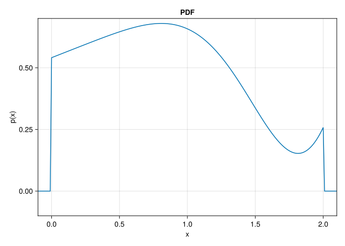
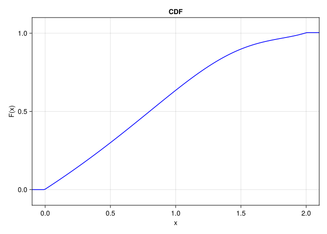

Let \(X\) be a random variable with Probability density function: \[\begin{equation}\tag{1}\label{eq-pdf}
p(x) =
\begin{cases}
\frac{2x\cos{(x^2)} + 5}{10 + \sin{(4)}} & x \in [0, 2] \\
0 & \text{otherwise}
\end{cases}
\end{equation}\]
Code
usingCairoMakiefunctionp(x::Real) (0≤ x ≤2.0) ? (2.0* x *cos(x^2.0) +5.0) / (10.0+sin(4.0)) :0.0endfunctionplotPDF() fig =Figure() ax =Axis(fig[1,1], title ="PDF", xlabel ="x", ylabel ="p(x)" ) r =-0.1:0.01:2.1lines!(ax, r, p.(r))xlims!(ax, -0.1, 2.1)ylims!(ax, -0.1, 0.7)display(fig);endplotPDF();

Part A
Solve for the mean and standard deviation Numerically
Using the Gauss-Kronrod quadrature we can numerically solve for the mean and the variance by calculating the first moment and second momements of the PDF of X.
Code
usingQuadGKfunctionE1(x::Real)return x *p(x)endfunctionE2(x::Real)return x^2*p(x)endfunctionparta_numeric() Ex =quadgk(E1, 0.0, 2.0, rtol=1e-3)[1] Ex² =quadgk(E2, 0.0, 2.0, rtol=1e-3)[1] σ² = Ex² - (Ex)^2 σ =sqrt(σ²)println("The numeric mean and standard deviation of the PDF of X are:")println("μ = $Ex")println("σ = $σ")return Ex, σendμ_numeric, σ_numeric =parta_numeric();
The numeric mean and standard deviation of the PDF of X are:
μ = 0.8310564083631247
σ = 0.4954158522588331
Let us solve for the first and second moments of (\(\ref{eq-pdf}\)) analytically and compare with the numerical findings.
functionstdev()E2(x) = (x^2.0*sin(x^2.0) +cos(x^2.0) + (5.0x^3/3.0)) / (10.0+sin(4.0)) Ex² =E2(2.0) -E2(0.0) σ² = Ex² - μ_exact^2returnsqrt(σ²)endσ_exact =stdev()println("The mean and the standard deviation of the PDF of X by analytical solution:")println("μ = $μ_exact")println("σ = $σ_exact")
The mean and the standard deviation of the PDF of X by analytical solution:
μ = 0.8310564083631246
σ = 0.49541585225883805
The numeric and analytic solutions agree.
Code
err_μ = (abs(μ_numeric - μ_exact) / μ_exact) *100err_σ = (abs(σ_numeric - σ_exact) / σ_exact) *100println("Percent error in the calculated mean = $err_μ")println("Percent error in the calculated standard deviation = $err_σ")
Percent error in the calculated mean = 1.3359177709872757e-14
Percent error in the calculated standard deviation = 9.972414966246794e-13
Part B
In order to find the CDF numerically, we will need to write a modified version of the trapezoidal rule such that we are populating an array with the cumulative sum of every dx of the PDF of \(X\).
Code
functioncumsumtrap(f::Function, x) y =f.(x) N =length(x) dx = x[2:N] .- x[1:N-1] meanY = (y[2:N] .+ y[1:N-1]) ./2 integral =cumsum(dx .* meanY)return [0; integral]endfunctionplotCDF() fig =Figure(); ax =Axis(fig[1,1], title ="CDF", xlabel ="x", ylabel ="F(x)" ) r =-0.1:0.01:2.1lines!(ax, r, cumsumtrap(p, r), label ="numerical", color =:blue)xlims!(ax, -0.1, 2.1)ylims!(ax, -0.1, 1.1)display(fig)return fig, ax, rendfig1, ax1, r =plotCDF();

Let us calculate the CDF by direct integration. The CDF of a continuous random variable \(X\) can be expressed as the integral of its probability density function \(p(x)\) as:
Let us develop a sampler for the random variable \(X\).
Let the Matrix \(\Sigma\) be a (N,2) matrix such that the rows are (x, y) coordinates, and the vector \(\textbf{x}\) also be of size N, where each element is a sample from the Uniform normal distribution.
By using linear interpolation from the formula: \[\begin{equation}\tag{3}\label{eq-li}
y = y_1 + \frac{(x - x_1)(y_2 - y_1)}{x_2 - x_1}
\end{equation}\]
The first column of \(\Sigma\) comes from the cumulative trapazoidal integration of the pdf function in the range [0, 2], while the second column are equally spaced points from the range [0, 2].
Code
functionliy(x::Float64, p1::Vector{Float64}, p2::Vector{Float64}) x1, y1 = p1 x2, y2 = p2return y1 + (x - x1)*(y2 - y1)/(x2 - x1)endfunctionsampleInverseCDF(x::Vector{Float64}, points::Matrix{Float64}) output =Vector{Float64}(undef, length(x))for (i, x_val) inenumerate(x) idx =findfirst(points[:, 1] .> x_val)if idx ==nothing# If x_val is greater than or equal to the last x value in inverse, use the last segment p1 = points[end-1, :] p2 = points[end, :]elseif idx ==1# If x_val is less than or equal to the first x value in inverse, use the first segment p1 = points[1, :] p2 = points[2, :]else# Otherwise, use the segment between idx-1 and idx p1 = points[idx-1, :] p2 = points[idx, :]end# Calculate interpolated y value using the liy function output[i] =liy(x_val, p1, p2) end outputendfunctionplotsampledist() Δr =1e-3 r =-0.1:Δr:2.1 points = [cumsumtrap(p, r) r] N =100000 x =rand(N) fig =Figure() ax =Axis(fig[1,1], title ="histogram of $N samples")hist!(fig[1,1], sampleInverseCDF(x, points), bins =80, normalization =:pdf)lines!(fig[1,1], r, p.(r), color =:red, label ="p(x)", linestyle =:dash) fig[1, 2] =Legend(fig, ax, "Legend", framevisible =false)display(fig)endplotsampledist();
![]()